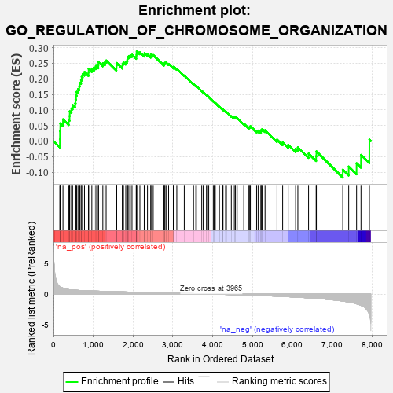
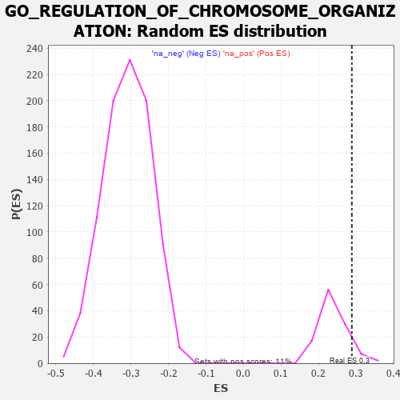

| | | Dataset | 7d |
| Phenotype | NoPhenotypeAvailable |
| Upregulated in class | na_pos |
| GeneSet | GO_REGULATION_OF_CHROMOSOME_ORGANIZATION |
| Enrichment Score (ES) | 0.28875753 |
| Normalized Enrichment Score (NES) | 1.2024565 |
| Nominal p-value | 0.08035714 |
| FDR q-value | 0.4858845 |
| FWER p-Value | 1.0 |
Table: GSEA Results Summary

Fig 1: Enrichment plot: GO_REGULATION_OF_CHROMOSOME_ORGANIZATION
Profile of the Running ES Score & Positions of GeneSet Members on the Rank Ordered List
| PROBE | GENE SYMBOL | GENE_TITLE | RANK IN GENE LIST | RANK METRIC SCORE | RUNNING ES | CORE ENRICHMENT | | 1 | SPI1 | | | 162 | 1.182 | 0.0059 | Yes |
| 2 | TEX14 | | | 164 | 1.179 | 0.0321 | Yes |
| 3 | BUB3 | | | 172 | 1.143 | 0.0569 | Yes |
| 4 | CDC45 | | | 239 | 0.950 | 0.0697 | Yes |
| 5 | AXIN2 | | | 383 | 0.713 | 0.0675 | Yes |
| 6 | NBN | | | 405 | 0.696 | 0.0804 | Yes |
| 7 | EED | | | 409 | 0.690 | 0.0955 | Yes |
| 8 | ERCC1 | | | 453 | 0.660 | 0.1048 | Yes |
| 9 | CDC20 | | | 480 | 0.644 | 0.1159 | Yes |
| 10 | MCM2 | | | 546 | 0.614 | 0.1214 | Yes |
| 11 | YLPM1 | | | 556 | 0.611 | 0.1339 | Yes |
| 12 | HIRA | | | 568 | 0.608 | 0.1462 | Yes |
| 13 | CCNB1 | | | 581 | 0.601 | 0.1581 | Yes |
| 14 | NDC80 | | | 616 | 0.590 | 0.1670 | Yes |
| 15 | NOC2L | | | 647 | 0.578 | 0.1761 | Yes |
| 16 | PARN | | | 660 | 0.572 | 0.1874 | Yes |
| 17 | MRE11 | | | 693 | 0.560 | 0.1959 | Yes |
| 18 | CDC6 | | | 709 | 0.557 | 0.2065 | Yes |
| 19 | WDR61 | | | 734 | 0.549 | 0.2157 | Yes |
| 20 | RAD21 | | | 779 | 0.538 | 0.2221 | Yes |
| 21 | HDAC8 | | | 881 | 0.510 | 0.2207 | Yes |
| 22 | PARG | | | 884 | 0.509 | 0.2319 | Yes |
| 23 | CTR9 | | | 964 | 0.492 | 0.2328 | Yes |
| 24 | PSMG2 | | | 1018 | 0.480 | 0.2369 | Yes |
| 25 | WDR70 | | | 1066 | 0.470 | 0.2414 | Yes |
| 26 | SRC | | | 1128 | 0.459 | 0.2439 | Yes |
| 27 | KMT2A | | | 1130 | 0.458 | 0.2540 | Yes |
| 28 | KAT7 | | | 1240 | 0.440 | 0.2500 | Yes |
| 29 | DKC1 | | | 1292 | 0.431 | 0.2532 | Yes |
| 30 | SSRP1 | | | 1323 | 0.424 | 0.2589 | Yes |
| 31 | TADA3 | | | 1580 | 0.378 | 0.2348 | Yes |
| 32 | CDC27 | | | 1585 | 0.377 | 0.2427 | Yes |
| 33 | PAF1 | | | 1588 | 0.376 | 0.2509 | Yes |
| 34 | KMT2E | | | 1730 | 0.350 | 0.2408 | Yes |
| 35 | ESPL1 | | | 1734 | 0.349 | 0.2482 | Yes |
| 36 | WAPL | | | 1758 | 0.344 | 0.2530 | Yes |
| 37 | FMR1 | | | 1816 | 0.334 | 0.2532 | Yes |
| 38 | RTF1 | | | 1844 | 0.329 | 0.2572 | Yes |
| 39 | OTUB1 | | | 1857 | 0.326 | 0.2629 | Yes |
| 40 | SMAD4 | | | 1860 | 0.326 | 0.2700 | Yes |
| 41 | CUL3 | | | 1893 | 0.321 | 0.2731 | Yes |
| 42 | TASOR | | | 1931 | 0.316 | 0.2754 | Yes |
| 43 | ZW10 | | | 1973 | 0.309 | 0.2772 | Yes |
| 44 | KDM3A | | | 2078 | 0.294 | 0.2705 | Yes |
| 45 | SART3 | | | 2084 | 0.293 | 0.2764 | Yes |
| 46 | CENPE | | | 2086 | 0.293 | 0.2829 | Yes |
| 47 | TAF7 | | | 2092 | 0.292 | 0.2888 | Yes |
| 48 | MORC2 | | | 2171 | 0.281 | 0.2851 | No |
| 49 | NSD3 | | | 2279 | 0.263 | 0.2774 | No |
| 50 | XRCC1 | | | 2287 | 0.262 | 0.2824 | No |
| 51 | SIN3A | | | 2361 | 0.251 | 0.2787 | No |
| 52 | FEN1 | | | 2446 | 0.237 | 0.2733 | No |
| 53 | KDM1A | | | 2447 | 0.237 | 0.2786 | No |
| 54 | CDT1 | | | 2505 | 0.226 | 0.2764 | No |
| 55 | RIOK2 | | | 2775 | 0.187 | 0.2464 | No |
| 56 | XRN1 | | | 2786 | 0.185 | 0.2493 | No |
| 57 | ATR | | | 2800 | 0.183 | 0.2517 | No |
| 58 | BECN1 | | | 2828 | 0.179 | 0.2523 | No |
| 59 | WDR5 | | | 2892 | 0.168 | 0.2481 | No |
| 60 | RTEL1 | | | 3010 | 0.148 | 0.2365 | No |
| 61 | BRD7 | | | 3018 | 0.147 | 0.2389 | No |
| 62 | TLK1 | | | 3098 | 0.137 | 0.2319 | No |
| 63 | SMG5 | | | 3285 | 0.108 | 0.2107 | No |
| 64 | UBR5 | | | 3518 | 0.074 | 0.1828 | No |
| 65 | LCMT1 | | | 3576 | 0.063 | 0.1770 | No |
| 66 | MAPK3 | | | 3589 | 0.062 | 0.1769 | No |
| 67 | CDC16 | | | 3724 | 0.038 | 0.1607 | No |
| 68 | SKI | | | 3762 | 0.032 | 0.1567 | No |
| 69 | NSD1 | | | 3779 | 0.031 | 0.1553 | No |
| 70 | SMG1 | | | 3843 | 0.021 | 0.1478 | No |
| 71 | NEK2 | | | 3871 | 0.016 | 0.1447 | No |
| 72 | NIPBL | | | 3900 | 0.010 | 0.1414 | No |
| 73 | PARP1 | | | 4014 | -0.010 | 0.1272 | No |
| 74 | MCPH1 | | | 4039 | -0.014 | 0.1245 | No |
| 75 | ATG5 | | | 4051 | -0.016 | 0.1235 | No |
| 76 | TAL1 | | | 4064 | -0.018 | 0.1223 | No |
| 77 | GFI1 | | | 4168 | -0.037 | 0.1101 | No |
| 78 | PAX5 | | | 4255 | -0.051 | 0.1002 | No |
| 79 | PCID2 | | | 4258 | -0.051 | 0.1011 | No |
| 80 | CTBP1 | | | 4323 | -0.064 | 0.0944 | No |
| 81 | SETD5 | | | 4343 | -0.067 | 0.0935 | No |
| 82 | LRRK2 | | | 4467 | -0.087 | 0.0798 | No |
| 83 | SNW1 | | | 4514 | -0.096 | 0.0761 | No |
| 84 | PINX1 | | | 4515 | -0.097 | 0.0783 | No |
| 85 | APC | | | 4558 | -0.107 | 0.0753 | No |
| 86 | PNKP | | | 4572 | -0.111 | 0.0762 | No |
| 87 | GATA3 | | | 4614 | -0.120 | 0.0737 | No |
| 88 | WBP2 | | | 4780 | -0.153 | 0.0561 | No |
| 89 | TLK2 | | | 4909 | -0.179 | 0.0438 | No |
| 90 | ATRX | | | 4929 | -0.184 | 0.0455 | No |
| 91 | XRCC5 | | | 4946 | -0.187 | 0.0477 | No |
| 92 | DDX11 | | | 5102 | -0.225 | 0.0330 | No |
| 93 | FLCN | | | 5140 | -0.235 | 0.0336 | No |
| 94 | ATM | | | 5210 | -0.249 | 0.0304 | No |
| 95 | TOP2A | | | 5216 | -0.250 | 0.0353 | No |
| 96 | TNKS2 | | | 5239 | -0.254 | 0.0382 | No |
| 97 | RAD50 | | | 5314 | -0.276 | 0.0350 | No |
| 98 | GNL3 | | | 5614 | -0.349 | 0.0048 | No |
| 99 | CDC23 | | | 5756 | -0.394 | -0.0044 | No |
| 100 | SET | | | 5895 | -0.434 | -0.0122 | No |
| 101 | PLK1 | | | 6082 | -0.500 | -0.0247 | No |
| 102 | TNKS | | | 6138 | -0.516 | -0.0201 | No |
| 103 | UBE2N | | | 6407 | -0.621 | -0.0403 | No |
| 104 | TPR | | | 6597 | -0.709 | -0.0485 | No |
| 105 | PIF1 | | | 6604 | -0.713 | -0.0332 | No |
| 106 | CDK9 | | | 7266 | -1.138 | -0.0918 | No |
| 107 | NEK7 | | | 7415 | -1.285 | -0.0819 | No |
| 108 | IWS1 | | | 7613 | -1.587 | -0.0714 | No |
| 109 | DCP2 | | | 7724 | -1.833 | -0.0443 | No |
| 110 | ARRB1 | | | 7935 | -3.377 | 0.0046 | No |
Table: GSEA details [plain text format]

Fig 2: GO_REGULATION_OF_CHROMOSOME_ORGANIZATION: Random ES distribution
Gene set null distribution of ES for GO_REGULATION_OF_CHROMOSOME_ORGANIZATION